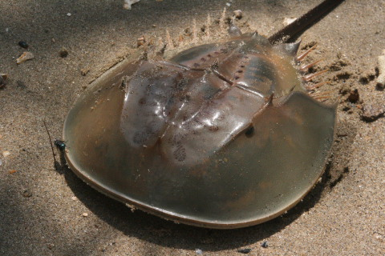
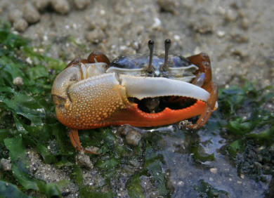
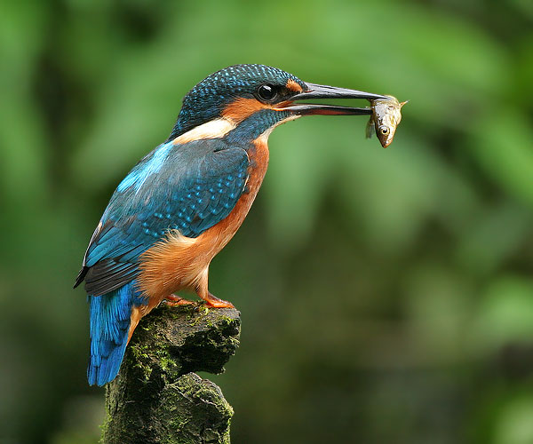
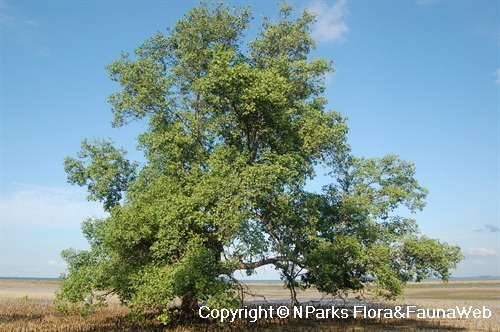
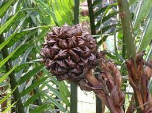
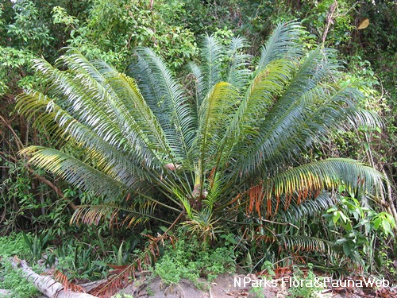

Enjoy the beautiful flora and fauna there!
Contents
Biodiversity of Animals at Chek Jawa [Click here to go there]
Biodiversity of Plants at Chek Jawa [Click here to go there]
Preservation of Chek Jawa [Click here to go there]
|  |
Horseshoe crabs prefer to reside on soft, sandy, or muddy bottoms in shallow coastal waters. During spring high tides, they breed in the intertidal zone. In some places of Asia, they're eaten, and they're also utilized as fishing bait, fertilizer, and in science (especially Limulus amebocyte lysate). Population losses have occurred in recent years as a result of coastal habitat damage and overharvesting. Carcinoscorpius rotundicauda, a type of horseshoe crab, may contain tetrodotoxin. Adapted from Wikipedia. Click here to visit the page. |
|  |
Fiddler crabs, like all crabs, shed their shells as they mature. When they molt, they will get a new set of legs or claws if they have lost any during their current growth cycle. Males will acquire a huge violin claw on the opposite side following their next molt if the large fiddle claw is gone. Because of their delicate shells, newly molted crabs are extremely vulnerable. They keep to themselves until the new shell hardens. Adapted from Wikipedia. Click here to visit the page. |
|  |
They eat a broad variety of food, which they normally catch by swooping down from a perch. While most people associate kingfishers with rivers and fish, many species survive on land and feed on small invertebrates. They build their nests in cavities, usually tunnels carved into natural or man-made banks in the earth, like other members of their order. Adapted from Wikipedia. Click here to visit the page. |
|  |
The tree is associated with congregating fireflies throughout Southeast Asia and is the food source of moth and other insects. Adapted from Wikipedia. Click here to visit the page. |
|  |
Unlike most palms, the nipa palm's trunk grows beneath the ground; only the leaves and flower stalk grow upwards above the surface. The leaves extend up to 9 m (30 ft) in height.The flowers are a globular inflorescence of female flowers at the tip with catkin-like red or yellow male flowers on the lower branches. The flower produces woody nuts arranged in a globular cluster up to 25 cm (10 in) across on a single stalk. The ripe nuts separate from the ball and float away on the tide, occasionally germinating while still water-borne. Adapted from Wikipedia. Click here to visit the page. |
|  |
The plant grows in sandy or rocky coastal vegetation, along shorelines in full or moderate shade. It occurs locally in Pulau Tekong. Its strongly scented male cone is visited by insects that forage for pollen. It is also the preferred local food plant for caterpillars of the butterfly, the cycad blue (Chilades pandava pandava), that feeds on the immature shoots of the plant. This plant is hardy, long-lived, slow-growing, and tolerant of poor soil conditions. It is suitable as an ornamental plant and used regularly in Singapore as a focal point in landscape designs. Its leaves may be used in floral arrangements too. Care must be taken against attack by the caterpillars of the cycad blue butterfly. Adapted from NParks. Click here to visit the page. |
Adapted from Wikipedia (Click here to visit the link)
Previously virtually unknown, Chek Jawa came into national prominence and focus only since the early 2000s when the area's rich biodiversity was discovered almost by chance during a nature outing at low tide. News on the impending land reclamation works planned by the government on the area sparked a rare show of public-led and coordinated effort to reverse the reclamation plans. A group of volunteers, headed by botanist Joseph Lai (who first discovered Chek Jawa's rich ecosystems in December 2000), conducted a biodiversity survey months before the area was to be reclaimed in 2001. This survey was captured on the documentary Remember Chek Jawa by Eric Lin Youwei. The volunteers then submitted a report and petitioned to the government for the preservation of the natural habitat.
The Singapore Government, in turn, surprised many when they acceded to these requests in December 2001. They agreed to leave the Chek Jawa area untouched for the next ten years. The area has been fenced off due to an increase of tourists into the area, damaging the ecosystem in the area. Conservation efforts were made by the Ministry of National Development to preserve the area.
In 2001, the National Parks Board (NParks) took over Chek Jawa's management. NParks conducts free guided tours of Chek Jawa a few times each month during low spring tide periods, and about 20,000 visitors have gone on its tours from 2002 to 2007.
In early 2007, Chek Jawa was closed to the public after being damaged by heavy rains in December 2006. Freshwater rains upset the wetlands' saltwater balance, resulting in the widespread death of marine creatures such as sea anemones, seastars, sponges. Tours conducted by NParks were stopped in March that year to let the wetlands recover.
On 8 July that year, the nature preserve was re-opened to the public and is free of charge. Visitors going to Chek Jawa no longer need to join the free guided tours conducted by NParks. These are conducted only a few times each month during low spring tide periods.The Singapore Government added new amenities with a visitor management plan for Chek Jawa, at a cost of S$7 million. These included a 1.1-kilometre boardwalk, a 20-metre tall viewing tower and a visitor centre with a viewing jetty.
The new boardwalk running along the coast and into the mangrove area allows visitors to get up close to plant and marine life such as fiddler crabs and monitor lizards, without damaging the area. Special care was taken to construct the boardwalk, which is made from concrete but simulated to resemble timber. This is more environmentally friendly as it cuts down on the use of wood while still retaining its natural feel.The free seven-story viewing tower called the Jejawi Tower allows visitors to view the tree canopy and observe birdlife such as the collared kingfisher and straw-headed bulbul. At the visitor center, which was converted from a Tudor-style house built in the 1930s, visitors can learn more about Chek Jawa's wildlife. A small trash receptacle and a soda vending machine are available, otherwise the small kiosk style center is typically unmanned.
(Jump to Top)